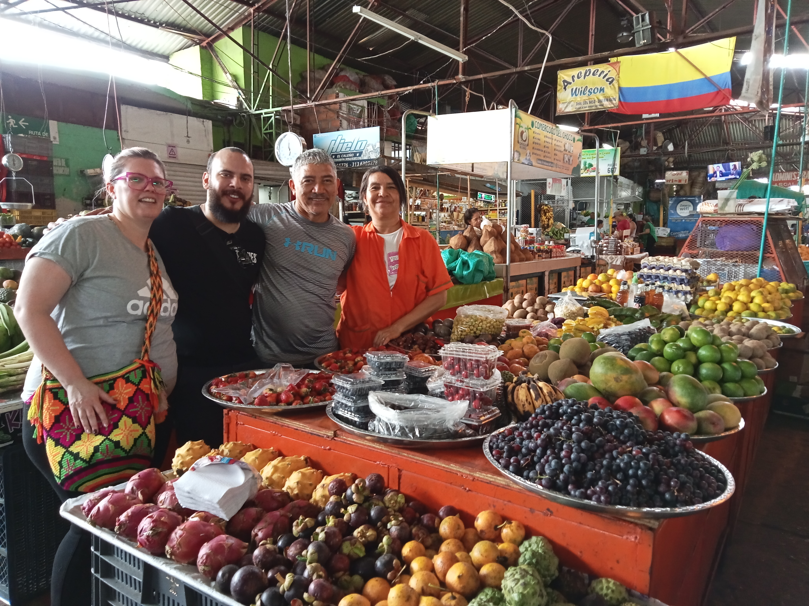

Nature Book via WhatsApp
CAFETAL Coffee Farm Visit
A day trip to a working coffee farm in the mountains. Walk the fields, pick beans, and understand what makes Colombian coffee the world's best.
850,000 COP
8 Hours
Farm Visit & Tasting
Free cancellation up to 24 hours before
The Experience
01
The Journey Up
Travel into the mountains to reach the coffee farm, enjoying scenic views of the Andean landscape along the way.
02
The Harvest
Walk through the coffee fields and learn to identify ripe cherries. Try your hand at picking beans just like the local farmers do.
03
Processing & Roasting
Follow the beans through washing, drying, and roasting. Understand how each step affects the final flavor of your cup.
04
The Perfect Cup
End your visit with a professional coffee tasting session, learning to identify the subtle notes that make Colombian coffee special.
What's Included
Private Transport
Bilingual Guide
Farm Tour
Harvesting Experience
Coffee Tasting
Traditional Lunch
You Might Also Like

